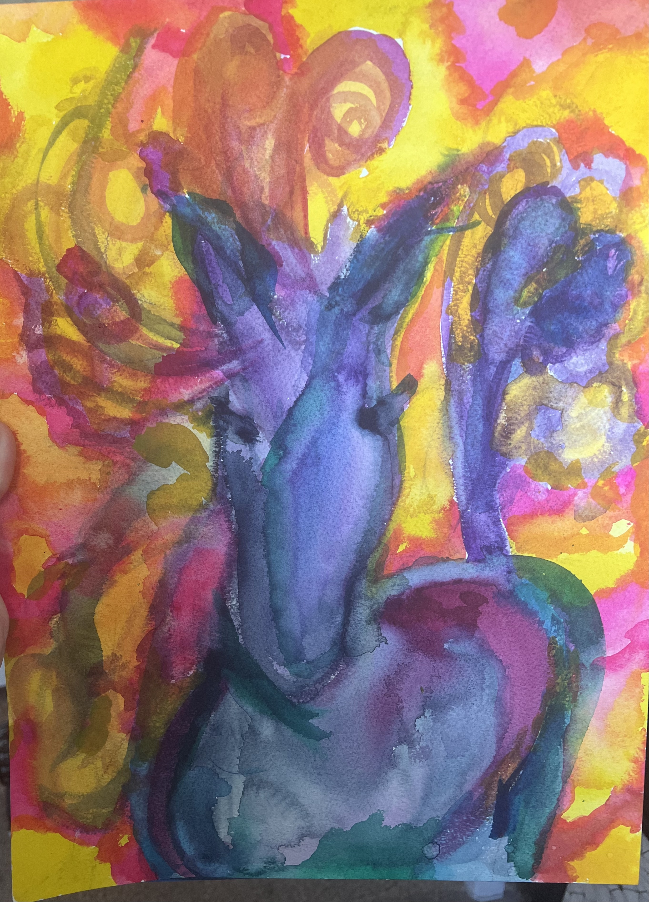

I am a creator. I spent most of my life believing that I was a supporter of the makers around me but not a creator in my own right. I collected tools, watched YouTube Videos and every so often I would make something if others were making too. Then a few years ago I was driving from Minnesota to Arizona alone. It crossed my mind that if anything had happened to me and someone opened the moving truck they would think an artist had left their studio behind. I decided to find classes and explore what I might be interested in. This process was put on hold during COVID so there are classes I didn't get to take and a few years where I just didn't have the energy to invest in creation. Not listed are projects in weaving, crochet, handbuilding clay, wheel throwing clay, and others.
Mixed Media Angel Guardian
 Light of the Art Angel class by Tamara Laporte
Light of the Art Angel class by Tamara Laporte
This is the first finished mixed media project I ever created. I was
taking a year long course called LifeBook from Tamara Laporte. The
Art Angel was one of the individual classes. It has layers of many
mediums including: paper collage, neocolors, watercolor, acrylic,
pencil.
I loved the project when I saw it but wanted an art angel who looked
more like me so I made mine with a wider face and jaw as well as
with curls vs. straight hair. The wings gave me all sorts of hassle
so in the end I just left the latest rendition and told myself to
leave them be. I still am not a fan of them but I LOVE the curls and
the messages written into my piece.
My First Pencil Portrait
Drawing Class at Mesa Art Center taught by Helen Rowles Article with more details about Helen Rowles as an Artist
We moved from Minnesota to Arizona just 6-8 months before Covid
happened. When we moved I wasn't sure what path I would take. I was
considering returning to college, finding a new job, exploring who I
was or being a Stay At Home Mom. In this time of uncertainty, I
registered for a drawing class. I am to very thankful I did as I met
Helen and so many other amazing artists. We were all at different
stages in our drawing experience so I started on shading a circle
and adored all the other works of art being created. Each week Helen
would demo for all of us, walk around with encouragements and hints
and lead us to find the artist she KNEW was in each of us. When she
said we would be doing portraits I was certain she meant for
everyone else and NOT for me. But she helped me find the belief
inside me so I could start on this piece.
This was done on Bristol Vellum with a Staedtler, Mars Lumograph HB
pencil and LOTS of kneeded eraser.
40th Birthday Quilt


I come from a long line of creators. They make things - knit, sew, quilt, print (as in on a printing press). I horde all the handmade items I have been gifted or received through the years. For my 40th birthday my sister gifted me the experience of learning to quilt with her. We went and picked out the fabric together. It is cotton. Family Lore says that she HATED my color choices. I had no idea. I thought I did well with my picks. We went to her house, put West Wing on the tv and started cutting, chaining blocks and finally tying the quilt. The kids, cats, friends and family have all snuggled under my quilt. This brings me joy!
Silversmithing Project - Malachite Ring
 Silversmithing and other Classes at Moonumental in St Charles,
MO
Silversmithing and other Classes at Moonumental in St Charles,
MO
Earlier this year (2023) I decided to purposefully seek out new things to try, learn and do. I found a class to make stackable rings so I registered and late on a Saturday night I found myself pounding, flaming, sizing and proudly wearing my very own stack of silver rings. I returned for the 2nd class in the series and created this ring. I have been back a few times and plan to return again this summer to make rings with stones my Mother mailed me which she said came from my late Grandparents. I look forward to seeing what can be done with them and the memories I will carry while I wear the rings I create.
Frolic Filly
 Current Course Offerings by Effy Wild
As I was looking for things to do while the kids were at their dads,
I clicked on an email which I had been ignoring for a few months
maybe a full year. I am not quite sure why I opened this email on
this day, but I am so thankful that I did. On a whim I registered
for the art class happening the next day. It came as a live event
with a replay available afterwards. Since I hadn't done one of her
courses before, I decided to experience the live class and actually
DO the work after while watching the replay. Instead I found myself
rushing to grab the "ingredients" and play along. This photo is the
first few layers of line drawings and watercolor paint. I have not
done a watercolor painting before. I have done color charts and
played with markings but never attempted a full project. The paint
went ALL OVER and anywhere it wanted to and was not listening to me
at all. so I went with it. This is the base, then I will seal it
with fixative and then add in acrylic and inks and who knows what
else I find to finish it up.
The point of the art class was to let loose and feel freedom. FROLIC
- so I did.
First Colored Pencil Project

Helen (my friend and teacher from my first Pencil Portrait) is an amazing artist well known for her colored pencil works. Covid happened so our class was no longer able to meet. I attempted some drawing at home during pandemic but found I couldn't focus and just didn't have my heart in it. So I put my pencils down. I took pictures here and there over the years since then. Thinking I would draw them and create from them with the skills I learned from Helen. I never did anything until earlier this year when I found a Friday class in Kirkwood, MO. You go, pay $10, learn, practice, enjoy the work of others and I remember my Helen. Since LaunchCode started I haven't returned to the Friday colored pencil class, I just can't work it into the schedule so I have been working at home. This will take MONTHS - possibly over a year. I am new and colored pencils are not a fast medium. They certainly do not have the erratic movement of the watercolor paints from the Frolic Filly.